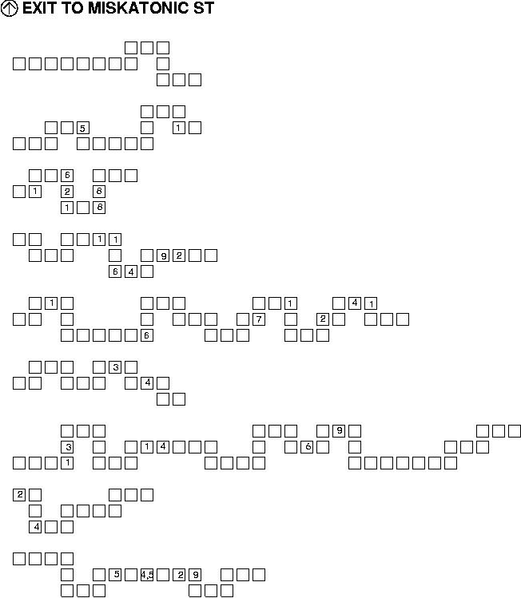

|
Spookiness
Rating: 0
|
|
Puzzlement
Rating: ISO
|
SubterraneanThings that live far, far beneath the ground are better left undisturbed, but humans don't always heed this advice. In 1984 a regular human presence disturbed its lair, and when it decided that the humans could no longer be tolerated, it headed for the wilderness to seek a new home. After a short trip it saw
 |